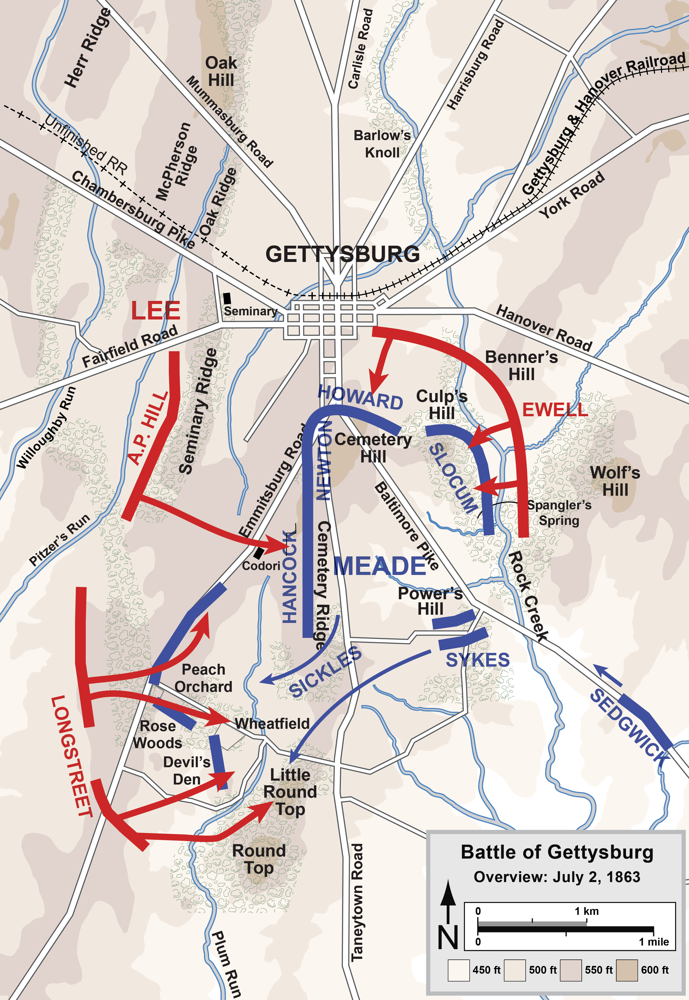

Gettysburg, Day 2
(July 2, 1863)

The second day of the Battle of Gettysburg was notable for two missteps, one on each
side of the battle. On the Confederate side, Gen. Robert E. Lee ordered a coordinated
attack, with the troops under the command of Lt. Gens. A.P. Hill and Richard Ewell
assaulting the northern end of the Union line while troops under the command of Lt. Gen.
James Longstreet assaulted the southern end. Longstreet fumbled his assignment,
attacking much later in the day than his comrades to the north, and undermining Lee's
plan to put simultaneous pressure on both ends of the Union line. Despite this
unexpected gift, the Northerners still came close to being flanked and forced into a
retreat thanks to a misstep by Union Maj. Gen. Daniel Sickles. Assessing the
battlefield without benefit of a military education, Sickles decided of his own
volition to move his troops forward to a spot known as the "Peach Orchard," stretching the Union line to the
breaking point. Famously, a desperate rally by the 20th Maine Infantry Regiment allowed
the Union to defend Little Round Top (the southern anchor of their position) and to keep their lines intact.
Note: Click on the image for a larger version.
Source: Hal Jespersen's Civil War Maps
|

{kind=link}